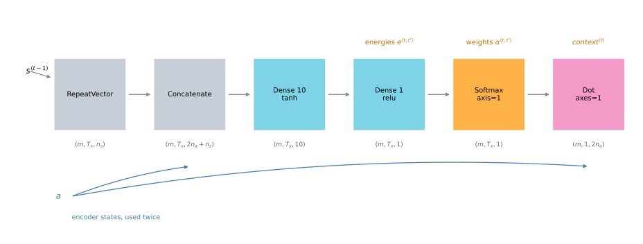
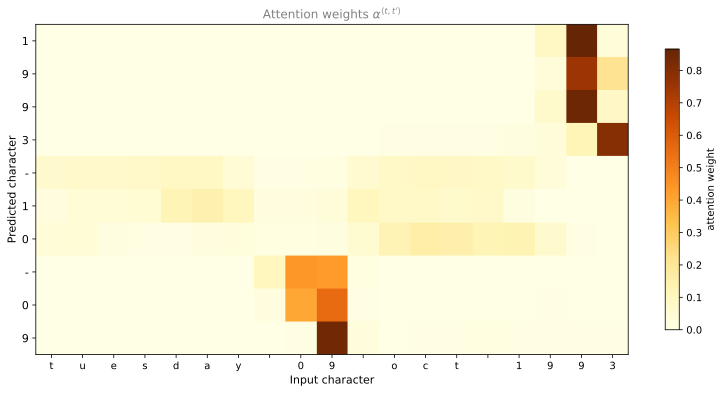

import datetime
import random
import numpy as np
from babel.dates import format_date
from keras.utils import to_categorical
# The date formats the generator draws from. `full` is repeated so that the
# long weekday-bearing form dominates the training set, exactly as it does in
# the original notebook.
#
# Note the lowercase 'y'. In Babel, uppercase 'Y' is the WEEK-BASED year, which
# disagrees with the calendar year for dates in the first or last days of a
# year. The original notebook used 'YYY' and 'YY', which mislabeled 41 of these
# 10,000 pairs, for example rendering 1998-12-28 as "28 dec 1999". Lowercase
# 'y' is the calendar year and makes every pair consistent.
FORMATS = ['short', 'medium', 'long', 'full', 'full', 'full', 'full', 'full',
'full', 'full', 'full', 'full', 'full', 'd MMM yyy', 'd MMMM yyy',
'dd MMM yyy', 'd MMM, yyy', 'd MMMM, yyy', 'dd, MMM yyy',
'd MM yy', 'd MMMM yyy', 'MMMM d yyy', 'MMMM d, yyy', 'dd.MM.yy']
START_DATE = datetime.date(1970, 1, 1)
DATE_SPAN = (datetime.date(2026, 1, 1) - START_DATE).days
def load_date(rng):
"""Return one (human readable, machine readable) date pair."""
dt = START_DATE + datetime.timedelta(days=rng.randrange(DATE_SPAN))
human = format_date(dt, format=rng.choice(FORMATS), locale='en_US')
human = human.lower().replace(',', '')
return human, dt.isoformat()
def load_dataset(m, seed=12345):
"""Generate m pairs and build the two character vocabularies."""
rng = random.Random(seed)
dataset, human_chars, machine_chars = [], set(), set()
for _ in range(m):
human, machine = load_date(rng)
dataset.append((human, machine))
human_chars.update(human)
machine_chars.update(machine)
human_vocab = dict(zip(sorted(human_chars) + ['<unk>', '<pad>'],
range(len(human_chars) + 2)))
inv_machine_vocab = dict(enumerate(sorted(machine_chars)))
machine_vocab = {v: k for k, v in inv_machine_vocab.items()}
return dataset, human_vocab, machine_vocab, inv_machine_vocab
def string_to_int(string, length, vocab):
"""Map a string to `length` vocabulary indices, padding or truncating.
The machine vocabulary has no <unk> or <pad> entries, because ISO dates
are always exactly Ty characters drawn from its own alphabet. Both are
therefore looked up only when they are actually needed, so this works
for either vocabulary.
"""
string = string.lower().replace(',', '')[:length]
rep = [vocab[char] if char in vocab else vocab['<unk>'] for char in string]
if len(rep) < length:
rep += [vocab['<pad>']] * (length - len(rep))
return rep
def int_to_string(ints, inv_vocab):
return [inv_vocab[i] for i in ints]
def preprocess_data(dataset, human_vocab, machine_vocab, Tx, Ty):
"""Index and one-hot encode the whole dataset."""
X_raw, Y_raw = zip(*dataset)
X = np.array([string_to_int(x, Tx, human_vocab) for x in X_raw])
Y = np.array([string_to_int(y, Ty, machine_vocab) for y in Y_raw])
Xoh = to_categorical(X, num_classes=len(human_vocab))
Yoh = to_categorical(Y, num_classes=len(machine_vocab))
return X, Y, Xoh, YohLab: Neural Machine Translation with Attention
deep-learning
sequence-models
nlp
attention
machine-translation
keras
lstm
lab
Build an attention model in Keras that translates human-readable dates into the ISO format, then plot what each output character attends to.
This lab builds a neural machine translation model that converts human-readable dates such as 25th of June, 2009 into machine-readable ones such as 2009-06-25, using the attention model from earlier this week.
Real language translation needs massive datasets and days of GPU training. Date translation is a smaller task that exercises exactly the same attention machinery, so the model here trains in seconds and still shows you what attention is doing.
ImportantNine changes from the original notebook
The source notebook was written against TensorFlow 2.3 and Keras 2, and this page runs on TensorFlow 2.21 with Keras 3 as installed in the project environment. Nine things changed (last updated 2026-08-31).
- The
fakerpackage is gone. It was used for one call,fake.date_object(), which returns a random date. That is now generated with the standard library, which avoids adding a render-time dependency for a single line. The generated vocabulary is character-for-character identical to the original, 37 human characters and 11 machine characters, which is why the pretrained weights still apply unchanged. The individual dates are not identical, though. This generator draws uniformly from 1970-01-01 to 2025-12-31 from a single seeded stream, whilefakerused its own generator over its own range, so the sampled dates differ and the one-epoch numbers below are close to but not the same as the notebook’s. Adam(lr=..., decay=0.01)is rejected by Keras 3. The argument is nowlearning_rate, and the legacydecaybehavior is reproduced exactly with anInverseTimeDecayschedule, which computes the same \(0.005 / (1 + 0.01 \cdot \text{step})\).metrics=['accuracy']is rejected on a multi-output model. Keras 3 requires one metric entry per output, so a model with ten outputs needs['accuracy'] * 10. It also names the resulting history keys differently. Keras 2 produceddense_2_accuracy,dense_2_1_accuracyand so on, embedding the output index in the middle. Keras 3 builds the whole<layer>_accuracykey first and appends the disambiguating counter to the end, so reading the per-position accuracies back takes a sort.- The custom
softmax(x, axis=1)helper is gone. It was built on legacykeras.backendtensor operations such asK.ndimandK.softmax. Standalone Keras 3 still ships akeras.backendmodule but no longer exposes those, so the helper cannot be carried over onto the public Keras 3 API. The legacytf.keras.backendcompatibility path does still export them, so the original would keep running there. The built-inSoftmax(axis=1)layer does the same job without either. - The recurrent cell is called positionally. Keras 3 renamed the call argument, so
post_activation_LSTM_cell(context, initial_state=[s, c])replaces the keyword form. - The attention plot was rebuilt. The original helper reached into
model.layers[2]throughmodel.layers[10]by index, not using every intervening one, which is fragile, and despite its axis label it plotted the pre-softmax energies normalized by row maximum rather than the attention weights themselves. This page builds a sibling model from the same shared layers and plots the real \(\alpha^{\langle t, t' \rangle}\), whose rows sum to 1 as a softmax output should. - A latent bug in
string_to_intis fixed. The original wrotevocab.get(char, '<unk>'), which would have inserted the literal string<unk>into an otherwise integer list had an unknown character ever appeared, breaking the array that gets one-hot encoded downstream. It never fired, because the vocabulary is built from the same generated data it later encodes. The lookup is now by index and is only performed when needed, which also lets the one function serve both vocabularies, since the machine vocabulary has no<unk>or<pad>entry at all. - The date format strings use lowercase
y. The original list used Babel’sYYYandYY, which are the week-based year rather than the calendar year. The two disagree for dates in the opening or closing days of a year, so the generator emitted 41 mislabeled pairs in 10,000, for instance pairing the human string28 dec 1999with the target1998-12-28. Switching toyyyandyyremoves every mismatch. This changes the generated dataset slightly, so the training numbers on this page move a little against an unfixed run. - The autograder is stripped. The unit tests and the
All tests passedprints are gone, and the things they silently asserted are printed and explained instead. One thing was kept out of those cells rather than discarded. They also set the random seed, so the seeding is restored next to the layer definitions, which keeps the initial weights and the one-epoch numbers reproducible from render to render.
Four things were left alone. The architecture, every hyperparameter, the dataset size and formats, and the pretrained weights, which are the course’s own model.h5 loaded unchanged.
Date Translation Task
The model reads a date written in any of 14 distinct formats (drawn from a 24-entry weighted list, so the common ones appear more often) and writes it back in the standardized YYYY-MM-DD form. Training uses 10,000 generated examples.
Two helpers do the data work. load_dataset generates the pairs and builds the character vocabularies, and preprocess_data turns strings into padded index arrays and then into one-hot arrays.
NoteDataset helpers
These are the notebook’s nmt_utils helpers, with the faker dependency replaced. Read them if you want to see exactly how the dates are built and indexed. Nothing later on the page depends on understanding them line by line.
Generate the dataset and look at the first ten pairs. Each is a human-written date and the ISO date it should become.
m = 10000
dataset, human_vocab, machine_vocab, inv_machine_vocab = load_dataset(m)
for human, machine in dataset[:10]:
print(f"{human:28} -> {machine}")18.05.07 -> 2007-05-18
monday november 30 1970 -> 1970-11-30
monday january 20 2003 -> 2003-01-20
31 mar 1994 -> 1994-03-31
thursday february 19 2009 -> 2009-02-19
saturday june 21 2003 -> 2003-06-21
monday november 3 2008 -> 2008-11-03
5 june 2020 -> 2020-06-05
22 08 85 -> 1985-08-22
monday august 19 2019 -> 2019-08-19Notice the variety. Some inputs carry a weekday the output must ignore entirely, some use two-digit years, and some are pure numeric. The model has to learn which characters matter for each output position.
The two vocabularies are separate. human_vocab maps every character appearing in the inputs to an index, and machine_vocab does the same for outputs, which need only the ten digits and the hyphen.
print("human_vocab size: ", len(human_vocab))
print("machine_vocab size:", len(machine_vocab))
print("machine characters:", ''.join(sorted(machine_vocab)))human_vocab size: 37
machine_vocab size: 11
machine characters: -0123456789Now fix the two sequence lengths and preprocess. \(T_x = 30\) is the assumed maximum length of an input date, so shorter ones are padded and longer ones truncated. \(T_y = 10\) because YYYY-MM-DD is exactly ten characters.
Tx, Ty = 30, 10
X, Y, Xoh, Yoh = preprocess_data(dataset, human_vocab, machine_vocab, Tx, Ty)
print("X.shape: ", X.shape, " indices, one per input character")
print("Y.shape: ", Y.shape, " indices, one per output character")
print("Xoh.shape:", Xoh.shape, " one-hot over the human vocabulary")
print("Yoh.shape:", Yoh.shape, " one-hot over the machine vocabulary")X.shape: (10000, 30) indices, one per input character
Y.shape: (10000, 10) indices, one per output character
Xoh.shape: (10000, 30, 37) one-hot over the human vocabulary
Yoh.shape: (10000, 10, 11) one-hot over the machine vocabularyThose four shapes are worth reading carefully, because the last axis of each one-hot array is the vocabulary it indexes into. Xoh is \((m, T_x, 37)\) and Yoh is \((m, T_y, 11)\), and the mismatch between 37 and 11 is the whole point. The input alphabet is much larger than the output alphabet.
Here is a single example at every stage of preprocessing.
index = 0
print("Source date:", dataset[index][0])
print("Target date:", dataset[index][1])
print()
print("Source as indices:", X[index])
print("Target as indices:", Y[index])
print()
print("Source one-hot shape:", Xoh[index].shape)
print("Target one-hot shape:", Yoh[index].shape)Source date: 18.05.07
Target date: 2007-05-18
Source as indices: [ 4 11 1 3 8 1 3 10 36 36 36 36 36 36 36 36 36 36 36 36 36 36 36 36
36 36 36 36 36 36]
Target as indices: [3 1 1 8 0 1 6 0 2 9]
Source one-hot shape: (30, 37)
Target one-hot shape: (10, 11)Attention Model
The model has two separate LSTMs, one on each side of the attention mechanism.
The pre-attention layer is a bidirectional LSTM that runs over the \(T_x\) input characters and produces \(a^{\langle t' \rangle}\), the concatenation of its forward and backward hidden states at each position. The post-attention LSTM runs over the \(T_y\) output positions, producing a hidden state \(s^{\langle t \rangle}\) and a cell state \(c^{\langle t \rangle}\) at each step, and a dense softmax layer turns each \(s^{\langle t \rangle}\) into a predicted character.
Two details differ from the lecture version and are worth pausing on.
This uses an LSTM, so there are two states to carry. The lecture used a basic RNN for the post-attention model, which carries only \(s^{\langle t \rangle}\). An LSTM carries a cell state \(c^{\langle t \rangle}\) as well, and both have to be threaded from one step to the next.
The post-attention LSTM does not see its own previous prediction. It takes only the context vector and its two previous states, not \(y^{\langle t-1 \rangle}\). That is a deliberate choice for this task. In text generation adjacent characters are strongly correlated, so feeding the previous output back helps. In a YYYY-MM-DD date there is little such dependency, so the model is simpler without it. Note that this makes the lab’s decoder different from the one drawn on the attention model page, where the output does feed forward.
One Step of Attention
The attention step takes all \(T_x\) encoder states plus the previous decoder state, and returns one context vector. The pipeline below is exactly what the code implements.
On a small screen, scroll horizontally to see the whole pipeline.

The layer objects are created once, outside the function, and reused at every one of the \(T_y\) steps. That is what makes the weights shared. Creating them inside the function would build a fresh set of weights on each call, which is not the model you want.
import keras
from keras.layers import (Bidirectional, Concatenate, Dense, Dot, Input, LSTM,
RepeatVector, Softmax)
from keras.models import Model
# The notebook seeded inside one of the grader cells. That cell is gone, so
# seed here instead, otherwise the initial weights and every number derived
# from them would change on each render.
keras.utils.set_random_seed(10)
n_a = 32 # units in the pre-attention bidirectional LSTM
n_s = 64 # units in the post-attention LSTM
repeator = RepeatVector(Tx)
concatenator = Concatenate(axis=-1)
densor1 = Dense(10, activation="tanh")
densor2 = Dense(1, activation="relu")
activator = Softmax(axis=1, name='attention_weights')
dotor = Dot(axes=1)
WarningWhy the softmax needs
axis=1
After densor2 the energies have shape \((m, T_x, 1)\), and the attention weights must sum to one across the \(T_x\) input positions. That is axis 1.
A default softmax normalizes over the last axis, which here has size 1, so every value would come out as exactly 1.0 and the weights would carry no information at all. The model would still train and would still produce numbers, which is what makes this the kind of bug that is easy to miss. The original notebook worked around it with a hand-written softmax function; Softmax(axis=1) is the direct way to say it.
Now the attention step itself. It repeats \(s^{\langle t-1 \rangle}\) across all \(T_x\) positions so it can be concatenated with every encoder state, scores each position with the two dense layers, normalizes those scores into weights, and takes the weighted sum.
def one_step_attention(a, s_prev):
"""
Perform one step of attention.
Arguments:
a -- encoder states from the Bi-LSTM, shape (m, Tx, 2 * n_a)
s_prev -- previous hidden state of the post-attention LSTM, shape (m, n_s)
Returns:
context -- context vector for this output step, shape (m, 1, 2 * n_a),
which is 64 here only because 2 * n_a happens to equal n_s
alphas -- the attention weights themselves, shape (m, Tx, 1)
The original returned only the context. Returning the weights as well is
what lets the same function serve the attention plot at the end.
"""
s_prev = repeator(s_prev) # (m, Tx, n_s)
concat = concatenator([a, s_prev]) # (m, Tx, 2*n_a + n_s)
e = densor1(concat) # (m, Tx, 10)
energies = densor2(e) # (m, Tx, 1)
alphas = activator(energies) # (m, Tx, 1), sums to 1 over Tx
context = dotor([alphas, a]) # (m, 1, 2*n_a)
return context, alphasBuilding the Full Model
Two more shared layers, the post-attention LSTM cell and the output softmax.
pre_attention_LSTM = Bidirectional(LSTM(n_a, return_sequences=True))
post_activation_LSTM_cell = LSTM(n_s, return_state=True)
output_layer = Dense(len(machine_vocab), activation='softmax')The model runs the input through the bidirectional LSTM once, then loops \(T_y\) times. Each pass computes a context vector, feeds it to the post-attention cell along with the previous two states, and turns the new hidden state into a predicted character.
The function takes a return_attention flag. With it set, the model outputs the ten attention weight arrays instead of the ten predictions. Because both versions are built from the same shared layer objects, they hold the same weights, which is how the attention gets visualized later without touching layer indices.
Before wiring it into a model, call the attention step once on dummy inputs. The autograder checked its return type, its shape, and its numerical values against a stored fixture. The type and shape are worth seeing, and so is the invariant the fixture was standing in for.
demo_a = np.random.uniform(size=(10, Tx, 2 * n_a)).astype('float32')
demo_s = np.zeros((10, n_s), dtype='float32')
demo_context, demo_alphas = one_step_attention(demo_a, demo_s)
print("context type: ", type(demo_context).__name__)
print("context shape:", tuple(demo_context.shape), "= (m, 1, 2 * n_a)")
print("alphas shape: ", tuple(demo_alphas.shape), "= (m, Tx, 1)")
print("alphas sum over Tx:", float(np.array(demo_alphas)[0].sum()))
# the context should be exactly the alpha-weighted sum of the encoder states
by_hand = (np.array(demo_alphas) * np.array(demo_a)).sum(axis=1, keepdims=True)
print("matches the weighted sum computed by hand:",
np.allclose(np.array(demo_context), by_hand, atol=1e-5))context type: EagerTensor
context shape: (10, 1, 64) = (m, 1, 2 * n_a)
alphas shape: (10, 30, 1) = (m, Tx, 1)
alphas sum over Tx: 0.9999999403953552
matches the weighted sum computed by hand: TrueThe context is one vector per example, not one per input position, which is the whole point. The \(T_x\) encoder states have been collapsed into a single weighted average. Two invariants are worth keeping from the stripped fixture. The weights sum to 1, which is what says the softmax normalized over the position axis, and the returned context really is \(\sum_{t'} \alpha^{\langle t, t' \rangle} a^{\langle t' \rangle}\) rather than something else of the same shape.
With the attention step verified, wire it into the full model.
def modelf(Tx, Ty, n_a, n_s, human_vocab_size, return_attention=False):
"""Build the attention model. Returns predictions, or attention weights."""
X = Input(shape=(Tx, human_vocab_size))
s0 = Input(shape=(n_s,), name='s0')
c0 = Input(shape=(n_s,), name='c0')
s, c = s0, c0
outputs, attention = [], []
a = pre_attention_LSTM(X)
for t in range(Ty):
context, alphas = one_step_attention(a, s)
attention.append(alphas)
# Keras 3 takes the sequence positionally, not as a keyword
_, s, c = post_activation_LSTM_cell(context, initial_state=[s, c])
outputs.append(output_layer(s))
return Model(inputs=[X, s0, c0],
outputs=attention if return_attention else outputs)
model = modelf(Tx, Ty, n_a, n_s, len(human_vocab))The autograder checked the architecture with a hidden comparison against an expected summary. Here is what it was actually checking, made visible. The parameter count should be 52,960, and the model should have ten outputs, one per output character.
print("total parameters:", f"{model.count_params():,}")
print("number of outputs:", len(model.outputs))
print("output shape of one:", model.outputs[0].shape)
print()
def shapes(x):
"""Shape, or list of shapes for a layer with several tensors."""
if isinstance(x, (list, tuple)):
inner = [shapes(t) for t in x]
return inner[0] if len(inner) == 1 else inner
return tuple(x.shape)
print("every layer in build order, with shapes, parameters and activation:")
for layer in model.layers:
activation = getattr(getattr(layer, 'activation', None), '__name__', '')
extra = f" repeats={layer.n}" if isinstance(layer, RepeatVector) else ''
print(f" {type(layer).__name__:15} out={str(shapes(layer.output)):48}"
f"{layer.count_params():>7,} {activation}{extra}")
if isinstance(layer, LSTM):
print(f" {'':15} in ={shapes(layer.input)}")total parameters: 52,960
number of outputs: 10
output shape of one: (None, 11)
every layer in build order, with shapes, parameters and activation:
InputLayer out=(None, 30, 37) 0
InputLayer out=(None, 64) 0
Bidirectional out=(None, 30, 64) 17,920
RepeatVector out=(None, 30, 64) 0 repeats=30
Concatenate out=(None, 30, 128) 0
Dense out=(None, 30, 10) 1,290 tanh
Dense out=(None, 30, 1) 11 relu
Softmax out=(None, 30, 1) 0
Dot out=(None, 1, 64) 0
InputLayer out=(None, 64) 0
LSTM out=[(None, 64), (None, 64), (None, 64)] 33,024 tanh
in =[(None, 1, 64), (None, 64), (None, 64)]
Dense out=(None, 11) 715 softmaxThe autograder ran a second check, that consecutive outputs differ across the \(T_y\) steps. Run the same probe on the untrained model.
probe = np.random.rand(1, Tx, len(human_vocab))
probe_out = np.array(model.predict([probe, np.zeros((1, n_s)),
np.zeros((1, n_s))], verbose=0))
identical = [np.allclose(probe_out[t], probe_out[t + 1]) for t in range(Ty - 1)]
print("consecutive output distributions identical?", any(identical))
print("largest gap between steps 0 and 1:",
round(float(np.abs(probe_out[0] - probe_out[1]).max()), 5))consecutive output distributions identical? False
largest gap between steps 0 and 1: 0.00398Be precise about what this does and does not establish, because the original test’s own message oversold it. It is an indirect predicate on the output distributions rather than a reading of the states themselves. It does catch the blunt failure, a loop that feeds every step the same state, which would make the ten distributions come out the same. It does not catch the subtler mistake of passing s0 and c0 as the cell’s initial_state while still reassigning s, because the attention step goes on reading the updated s and the outputs still differ. So False here is worth having and is not proof that both running states were threaded correctly.
That table is what the stripped comparator was checking, layer by layer. Every entry of the notebook’s expected summary is visible in it, including the two the comparator carried beyond a single output shape. The RepeatVector count of 30 is printed as repeats, and the post-attention LSTM shows all three of its output shapes and all three of its input shapes, since it returns a value plus two states and receives a sequence plus two initial states. The one difference from the notebook is the disclosed one, that Activation is now Softmax.
The parameters live in only four places. The post-attention LSTM holds most of them, 33,024 of the 52,960 total, about 62 percent. The bidirectional LSTM holds 17,920, about 34 percent. The two small dense layers of the attention scorer hold barely any, and the output layer is tiny because the machine vocabulary has only eleven characters.
Compiling and Training
The optimizer is Adam with a learning rate of 0.005 and the usual \(\beta_1 = 0.9\) and \(\beta_2 = 0.999\). The original also set decay=0.01, a Keras 2 argument that shrank the learning rate as \(0.005 / (1 + 0.01 \cdot \text{step})\). Keras 3 removed it, so the same schedule is written explicitly.
The loss is categorical crossentropy, since each of the ten outputs is a softmax over the eleven machine characters. The metrics list needs one entry per output, which is what ['accuracy'] * Ty provides.
from keras.optimizers import Adam
from keras.optimizers.schedules import InverseTimeDecay
# reproduces the legacy decay=0.01 behavior exactly
schedule = InverseTimeDecay(0.005, decay_steps=1, decay_rate=0.01)
opt = Adam(learning_rate=schedule, beta_1=0.9, beta_2=0.999)
model.compile(loss='categorical_crossentropy', optimizer=opt,
metrics=['accuracy'] * Ty)
print("optimizer: ", type(opt).__name__)
print("initial lr: ", round(float(schedule(0)), 6))
print("lr after 100: ", round(float(schedule(100)), 6))
print("beta_1, beta_2: ", float(opt.beta_1), float(opt.beta_2))
print("loss: ", model.loss)
print("metrics entries:", Ty, "one per output")optimizer: Adam
initial lr: 0.005
lr after 100: 0.0025
beta_1, beta_2: 0.9 0.999
loss: categorical_crossentropy
metrics entries: 10 one per outputThe model takes three inputs, so training needs the one-hot dates plus zero-filled initial states for the post-attention LSTM. The targets have to be a list of ten arrays rather than one array of shape \((m, T_y, 11)\), because the model has ten separate outputs. Swapping the first two axes of Yoh and turning the result into a list does that.
s0 = np.zeros((m, n_s))
c0 = np.zeros((m, n_s))
outputs = list(Yoh.swapaxes(0, 1))
print("number of target arrays:", len(outputs), "one per output position")
print("shape of each: ", outputs[0].shape)number of target arrays: 10 one per output position
shape of each: (10000, 11)Now train for one epoch. This is short on purpose, so you can watch the loss and the per-position accuracies move without waiting.
import re
history = model.fit([Xoh, s0, c0], outputs, epochs=1, batch_size=100,
verbose=0)
# Keras 3 names every output metric after the shared output layer, then
# appends a counter, so output 0 is "<layer>_accuracy" and the rest are
# "<layer>_accuracy_1" through "_9". Sort by that counter to get model order.
def output_index(key):
match = re.search(r'accuracy_(\d+)$', key)
return int(match.group(1)) if match else 0
acc_keys = sorted((k for k in history.history if 'accuracy' in k),
key=output_index)
print(f"total loss after one epoch: {history.history['loss'][-1]:.3f}")
print()
print("accuracy at each of the ten output positions:")
for i, key in enumerate(acc_keys):
print(f" position {i} ('{'YYYY-MM-DD'[i]}'): "
f"{history.history[key][-1]:.3f}")total loss after one epoch: 16.992
accuracy at each of the ten output positions:
position 0 ('Y'): 0.459
position 1 ('Y'): 0.589
position 2 ('Y'): 0.236
position 3 ('Y'): 0.056
position 4 ('-'): 0.942
position 5 ('M'): 0.357
position 6 ('M'): 0.069
position 7 ('-'): 0.920
position 8 ('D'): 0.263
position 9 ('D'): 0.110One epoch is not enough. The two hyphens, at positions 4 and 7, are the clear peaks at around 0.9, which is unsurprising since they are the same character in every single target. Everything that actually varies is still poor, and the positions carrying the second month digit and the last year digit are close to useless. Note that even position 0 sits near chance despite having only two possible values, 1 or 2, since every year in the data falls in 1970 to 2025. The course trained this model for longer and saved the weights, so load those to see what a trained model does.
WEIGHTS = '../../../media/deep-learning/nmt-attention/model.h5'
model.load_weights(WEIGHTS)
print("loaded pretrained weights")loaded pretrained weightsResults
Run the trained model on a set of evaluation dates, including some awkward ones. Note that these are not guaranteed to be held out. The normalized form of March 3 2001 does appear in the generated training set, and what the separately pretrained course model saw is not knowable from here. The model has to find the day, month and year wherever they sit, ignore any weekday, and expand two-digit years.
EXAMPLES = ['3 May 1979', '5 April 09', '21th of August 2016',
'Tue 10 Jul 2007', 'Saturday May 9 2018', 'March 3 2001',
'March 3rd 2001', '1 March 2001']
zero = np.zeros((1, n_s))
for example in EXAMPLES:
source = to_categorical(np.array([string_to_int(example, Tx, human_vocab)]),
num_classes=len(human_vocab))
prediction = np.array(model.predict([source, zero, zero], verbose=0))
chars = int_to_string(np.argmax(prediction, axis=-1).ravel(),
inv_machine_vocab)
print(f" {example:22} -> {''.join(chars)}") 3 May 1979 -> 1979-05-33
5 April 09 -> 2009-04-05
21th of August 2016 -> 2016-08-20
Tue 10 Jul 2007 -> 2007-07-10
Saturday May 9 2018 -> 2018-05-09
March 3 2001 -> 2001-03-03
March 3rd 2001 -> 2001-03-03
1 March 2001 -> 2001-03-01Most are exactly right, and two are not. 3 May 1979 comes out as 1979-05-33, and 21th of August 2016 becomes 2016-08-20. Both are the original notebook’s own results, reproduced here unchanged.
The two failures are not the same kind. 21th of August 2016 is outside the training distribution, since no format in the generator produces an ordinal suffix or the word of. Every individual character is in the vocabulary, so what is unseen is the sequence rather than the alphabet. 3 May 1979 is different and more interesting, because that input is squarely inside the distribution. The format list includes d MMM YYY and d MMMM YYY, which render exactly this string, and eleven of its fourteen distinct entries produce an unpadded day. The dataset sample printed earlier contains 5 june 2020. So this is a plain model error on an input of a kind it did train on, and diagnosing it would mean measuring the accuracy on single-digit-day inputs specifically rather than assuming a cause.
Visualizing Attention
The task has a fixed output length, so it could have been done with ten independent softmax units. The reason to prefer attention is that each output character can learn to depend on a small, relevant part of the input, and that dependence can be inspected.
Build the sibling model that returns attention weights rather than predictions. It shares every layer object with the trained model, so it needs no separate training.
attention_model = modelf(Tx, Ty, n_a, n_s, len(human_vocab),
return_attention=True)
text = "Tuesday 09 Oct 1993"
source = to_categorical(np.array([string_to_int(text, Tx, human_vocab)]),
num_classes=len(human_vocab))
alphas = np.array(attention_model.predict([source, zero, zero], verbose=0))
alphas = alphas.reshape(Ty, Tx)
prediction = np.array(model.predict([source, zero, zero], verbose=0))
predicted = ''.join(int_to_string(np.argmax(prediction, axis=-1).ravel(),
inv_machine_vocab))
print("input: ", text)
print("prediction: ", predicted)
print("alpha shape:", alphas.shape, "(one row per output character)")
print("row sums: ", np.round(alphas.sum(axis=1), 6)[:5], "...")input: Tuesday 09 Oct 1993
prediction: 1993-10-09
alpha shape: (10, 30) (one row per output character)
row sums: [1. 1. 1. 1. 1.] ...Every row sums to 1, which is the check that the softmax is normalizing over the right axis. Now plot the matrix.

Read the dark cells against the input. The four year digits draw almost all their attention from the 93 late in the string, the month characters spread theirs over oct, and the two day digits concentrate on 09. The seven columns spanning tuesday stay pale all the way down, because no output character needs them. Nothing supervised that. The model was never told which input characters correspond to which output characters, and it worked the alignment out from the translation objective alone.
NoteWhat You Should Remember
- Attention lets a model map an input of length \(T_x\) to an output of a different length \(T_y\), which is what makes date translation work at all.
- Machine translation architectures are not only for human languages. Any sequence to sequence mapping fits.
- Layer objects defined once and reused across the \(T_y\) steps are what makes the weights shared. Defining them inside the loop would build \(T_y\) separate sets.
- The attention softmax must normalize across input positions. With a trailing axis of size 1, a default softmax silently returns all ones.
- The attention weights are inspectable, and plotting them shows the model learned a sensible alignment without ever being given one.
Review Questions
1. Why are repeator, densor1, densor2 and the rest defined outside one_step_attention rather than inside it?
Answer
So that all \(T_y\) attention steps share one set of weights. A Keras layer object owns its weights, and calling the same object repeatedly reuses them. Constructing the layers inside the function would build a fresh object with freshly initialized weights on every call, giving ten independent attention mechanisms instead of one applied ten times. The model would have far more parameters and would have to learn the same scoring function ten separate times.
1. The energies have shape \((m, T_x, 1)\). What goes wrong if the softmax normalizes over the last axis instead of axis 1?
Answer
Every weight becomes exactly 1.0. A softmax over an axis of size 1 has a single value to normalize, and a single value always normalizes to one. The context vector would then be the unweighted sum of all \(T_x\) encoder states at every output step, identical for all ten steps, so the attention mechanism would carry no information whatsoever.
The reason this is worth naming is that nothing crashes. The shapes all still work, the model still trains, and the loss still falls somewhat, since the post-attention LSTM can extract a little from a constant summary. It just quietly is not an attention model any more.
1. Why does the post-attention LSTM not take its own previous prediction \(y^{\langle t-1 \rangle}\) as an input, when the language models earlier in the course did?
Answer
Because the output characters here are nearly independent of each other. In text generation the previous character says a great deal about the next one, so feeding it back is valuable. In a YYYY-MM-DD date, knowing that the previous character was a 0 tells you very little about the next, since the day, month and year are determined by the input rather than by each other. Dropping the connection makes the model simpler at almost no cost.
1. The attention plot shows pale columns over tuesday. What does that tell you, and who told the model to do it?
Answer
It tells you the model assigns near-zero attention weight to the weekday characters at every output step, which is correct, since the weekday is redundant given the rest of the date and contributes nothing to YYYY-MM-DD.
Nobody told it. There is no label anywhere in the training data saying which input characters matter. The only signal is the translation objective, and backpropagation through the attention weights found that ignoring the weekday produced better predictions. The alignment is a learned by-product, which is exactly the property that makes attention weights worth plotting.
1. The trained model turns 3 May 1979 into 1979-05-33. What kind of failure is this, and what would you check first?
Answer
The year and month are right and only the day is wrong, so the model located the right parts of the input and mishandled one of them. The digit 3 had to become 03, and the model emitted 33 instead, failing to produce the leading zero.
Resist naming a cause. This input is in distribution, since the generator has formats that render exactly 3 may 1979, so the easy story that the model never saw this shape is not available. What to check first is a measurement rather than a hypothesis. Score the model on a held-out slice of single-digit-day inputs and compare it against two-digit-day inputs. If the gap is large the problem is concentrated there and worth attacking, and if it is not then this is one ordinary error among many and the interesting question is what else it gets wrong.